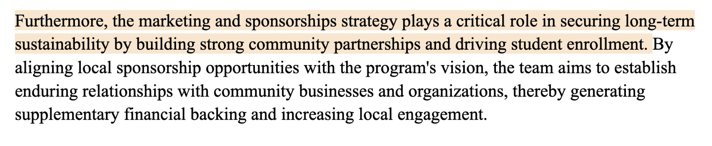
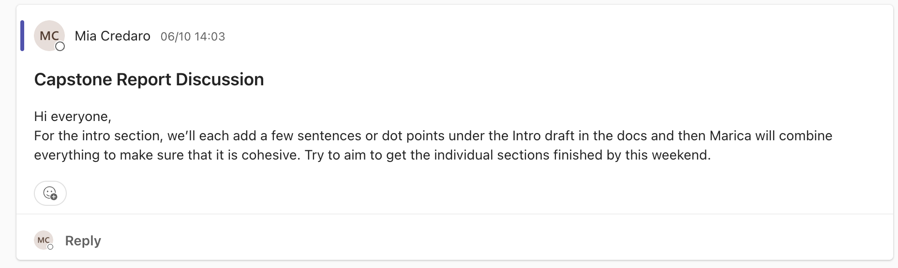
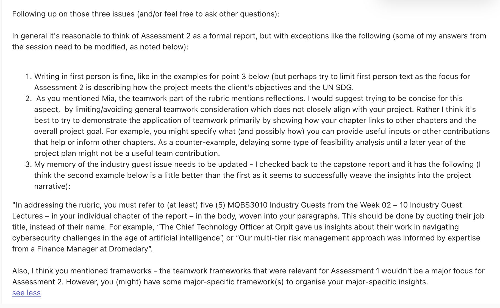
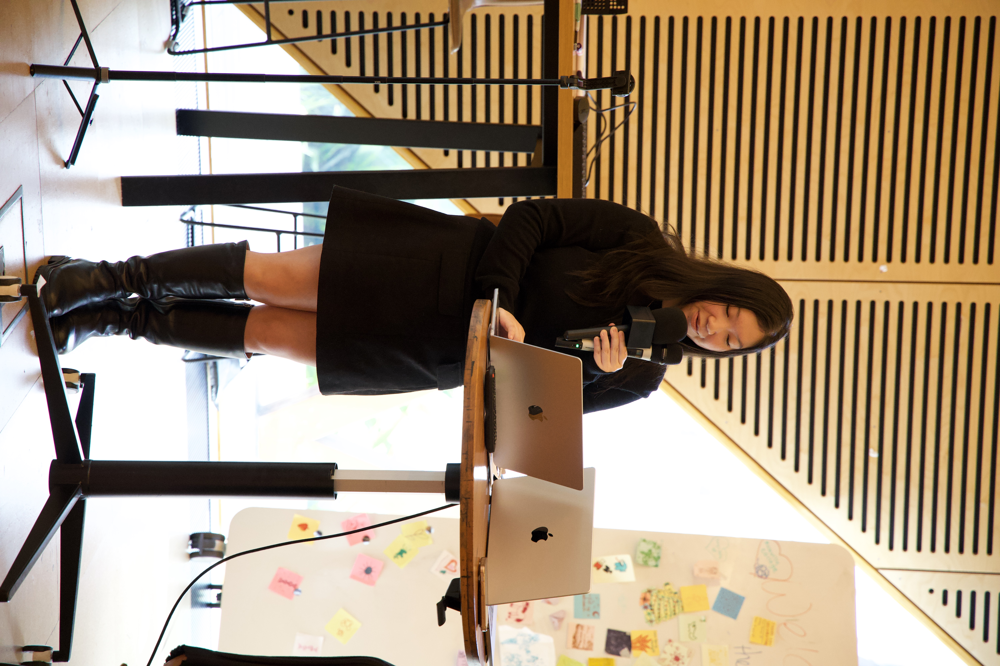
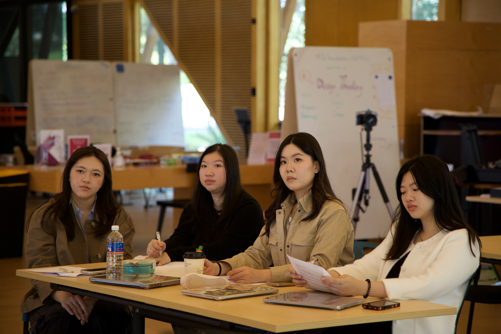
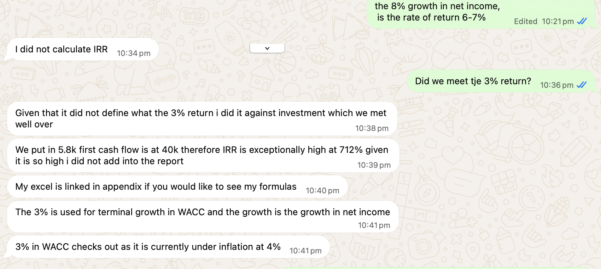
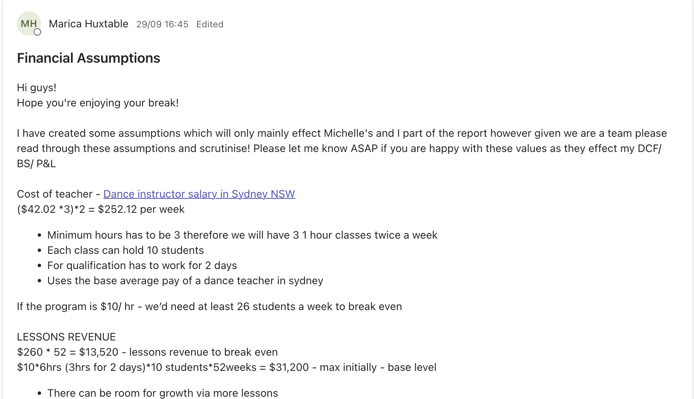

Where I fit, and how I'm growing
My experience across business, technology and marketing has given me opportunities to apply analytical thinking, solve problems and work with different stakeholders. Below, I've highlighted how my experience aligns with the role and the skills I'm continuing to develop.
Where I fit
Commercial awareness
Our program had to deliver social impact and still be financially sustainable. I linked the marketing and sponsorship strategy to long-term funding, aligning local sponsorship opportunities with the program's vision to build lasting partnerships with community businesses, bringing in extra financial backing while growing local engagement and enrolments.

Written & verbal communication
I wrote the market segmentation chapter, the first of our marketing chapters, introducing the target market and customer personas that would shape the rest of the marketing strategy. I focused on presenting the analysis clearly and concisely so decision-makers at The King's Foundation could act on it.


Attention to detail
I reviewed my personas against the rest of the report and refined them, correcting the location to match Hillview Estate in the Southern Highlands and adding detail on each customer's barriers and needs.


Initiative
I set out how our team would combine the report introduction and set a clear deadline. When the rubric was unclear, I raised questions with my tutor and applied the guidance to how I linked my chapter to the rest of the report.


Engaging with stakeholders
At BalanceEdge's panel event, I introduced the guest speakers to the audience, representing the business confidently in front of industry professionals and attendees.


Working across business functions
Our finance teammate shared break-even assumptions for the team to scrutinise. I used them to refine my target market and helped consolidate our shared document, so marketing and finance worked as one plan.


How I'm growing
Learning to prioritise
The Agility Challenge taught me how to prioritise the most important tasks, manage my time more effectively and seek feedback earlier.
Acting on feedback
When our finance teammate's model showed my original target market wasn't financially realistic, I took it as feedback rather than criticism. I reworked my segments to match, and now I check my assumptions with other disciplines before finalising.
Designing for inclusion
Building a program to align with SDG 4 goal has taught me how different stakeholders are affected and how I need to consider different stakeholder needs when desiging a project.
Broadening my horizons
Hearing industry professionals describe their varied career paths showed me that careers rarely follow a straight line. I learned to see each role as a chance to build transferable skills, and to value every opportunity as a learning experience.
Commercial judgement
I now look beyond whether an idea sounds good to whether it makes financial sense, weighing costs, risks and returns.
“Each team member should contribute based on what each person brings to the table.”
What I did: In our business case and client deck, we divided the work by each member's area of expertise. I took on market research, customer segmentation and the stakeholder map, playing to my marketing strengths while relying on teammates for finance and operations.
“That difference is a good point of decision making where we can go back and revisit some of our points.”
What I did: When our finance model required me to adapt the target market, I treated the disagreement as a chance to revisit our assumptions together, which led to a more realistic program. Next time, I'll agree on core assumptions with other departments at the start.
My next steps
-
Next
Gain industry experience
I want to continue building practical experience, applying what I've learned at university and exploring different areas of business through a graduate role.
Secure a graduate role and contribute to projects across different business functions.
-
Ongoing
Keep my skills up to date
The World Economic Forum's Future of Jobs report showed me that the skills employers need are changing fast, so I plan to strengthening my Excel through courses.
Complete at least one short course each year and apply what I learn to real work.
-
Long term
Make a Positive Impact
Building a program for SDG 4 and SDG 10 showed me businesses can create social value and still be commercially sustainable. I want to build my career with organisations that take CSR seriously.
Research employers' CSR commitments before applying, and choose workplaces whose values align with mine.